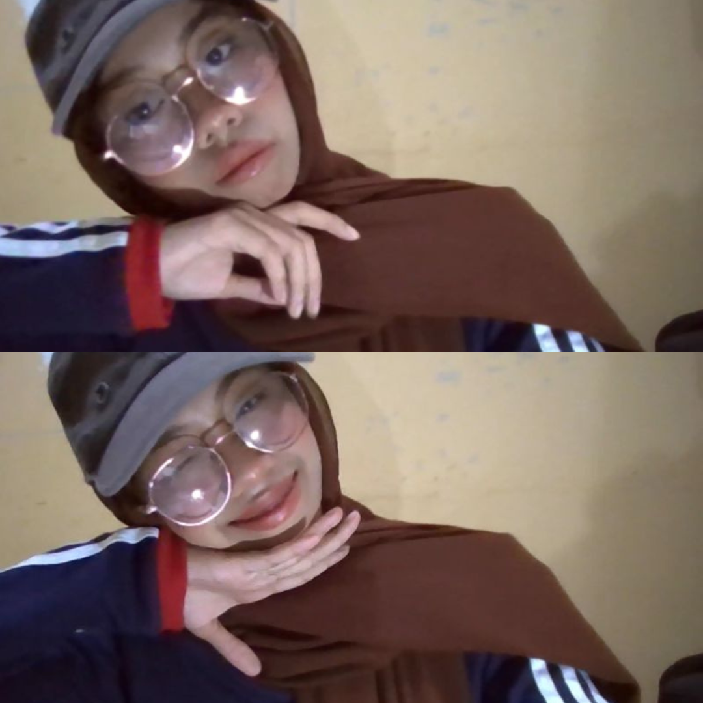
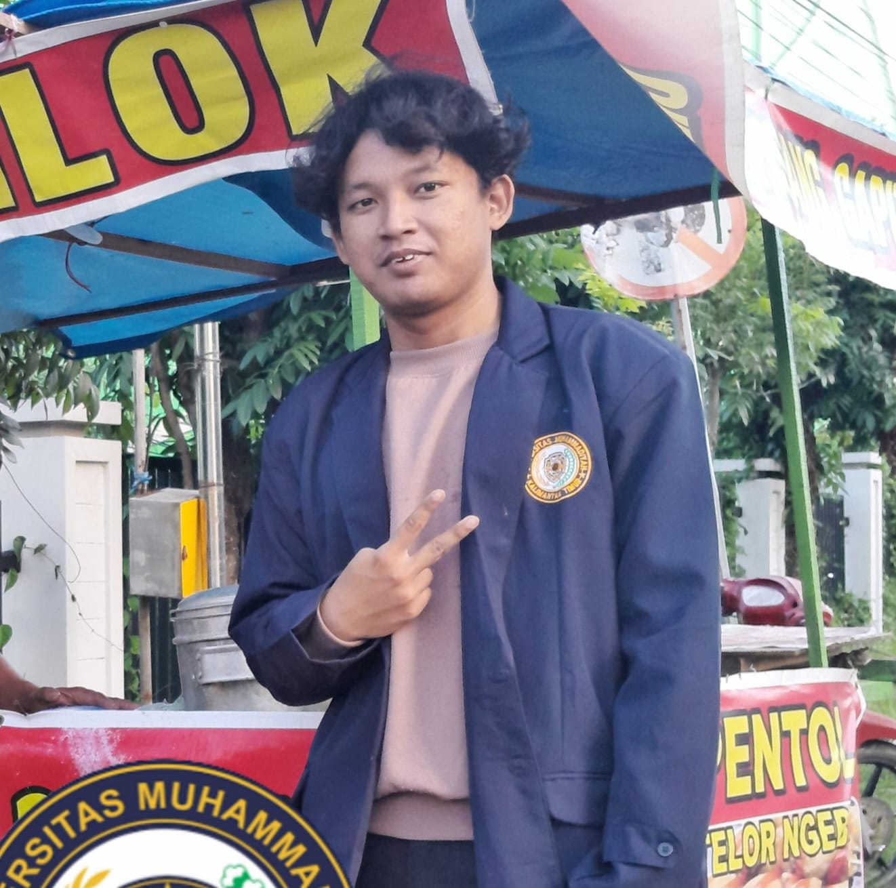
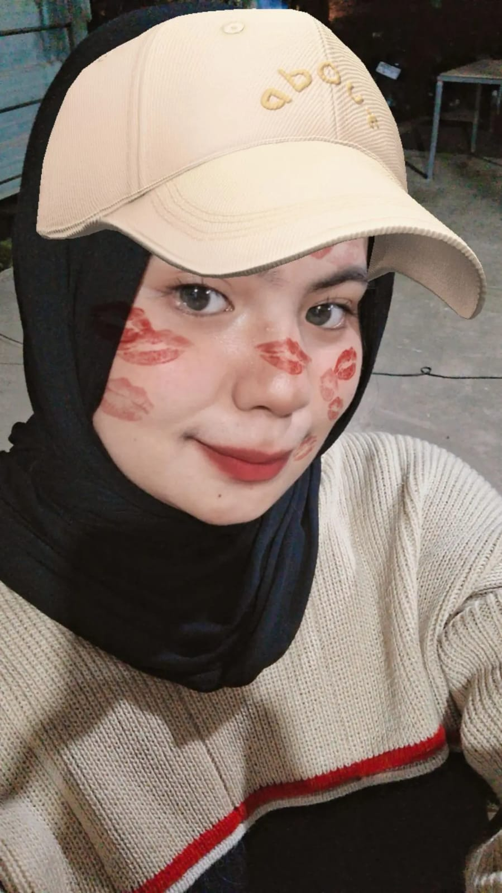

About Us

Pitra Aulia

Revilino Budi Santoso
Ricky Joan Fadillah

Rusmini Nur
Hola! Kami The Elevenators yang merupakan kelompok yang terdiri dari 4 mahasiswa. Kami mahasiswa dari Universitas Muhammadiyah Kalimantan Timur dengan program studi Teknik Informatika. Kami menciptakan website ini untuk memenuhi kebutuhan project Ujian Akhir Semester untuk mata kuliah Pengantar Ilmu Lingkungan. Website ini membangun tema Limbah B3 dan Standarisasinya di Indonesia yang akan memberikan edukasi soal limbah B3. Dengan website yang kami buat, kalian ga cuma bisa belajar soal limbah B3 dan standarnya saja loh, tapi kalian juga bisa mengidentifikasi limbah B3 dengan praktis!!